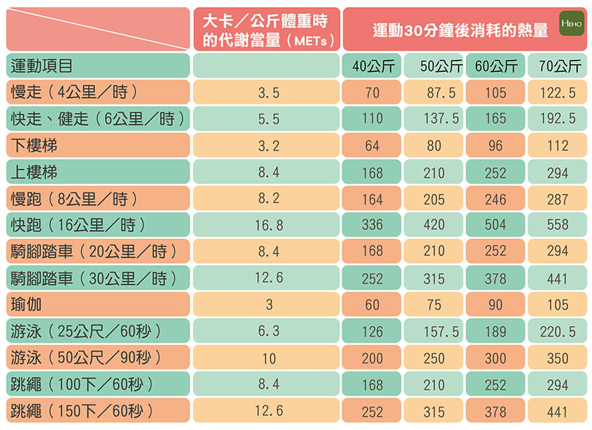

增強心肺功能 強化肌肉 強健骨骼 增加肌肉的柔韌度，減低受傷機會 促進新陳代謝，消耗熱能，防止脂肪積聚 有助舒展身心，減輕精神壓力 增強身體的抵抗力 可減低患上心臟病、高血壓、糖尿病等嚴重疾病的機會
可強化肌肉的力量和耐力 不需加額外儀器來鍛練 每星期平均做3次；每個動作可依照自己的能力做10至25次；整套動作共做3次 可參考的肌力鍛練運動包括 1.下肢 踏梯級 背靠牆，站立至微屈膝，俗稱無形椅 四點跪，屈膝並提高一腿 2.背部 俯臥，提升肩膊和雙臂 3.腹部 仰臥起坐（屈膝，雙手交叉於胸前，提升頭和肩膊，直至肩胛骨離開地面） 4.上肢 跪膝掌上壓。若然不夠力，可轉做站立著用手推牆
於主項運動後做，約做 10 分鐘 令身體各器官和系統慢慢緩和下來 促進肌肉的血液循環，有助清除因運動造成的新陳代謝廢物，令肌肉更快復原 動作與熱身運動類同，但不同的是，其動作的速度和幅度是由快到慢、由大到小，包括小踏步、慢行、深呼吸和伸展運動等
皮膚損傷 肌肉、肌腱拉傷 肌肉抽筋 關節扭傷 腰酸背痛 中暑 頭部受傷
鍛練前最好先做身體檢查 患有心臟病或哮喘等疾病的兒童及青少年，應遵從醫生指示，才開始進行鍛練 兒童及青少年做運動時，成年人如父母、體育老師等應從旁指導，以策安全 運動前後要作充分的熱身和緩和運動，以保障安全，避免引致肌肉抽筋、關節扭傷等創傷 應穿著適當及舒服的衫褲鞋襪 採用合適的運動裝備，例如踏單車時要佩戴頭盔和護膝；進行水上運動如獨木舟和風帆時要穿著救生衣 不要吃飽後立即做運動 留意天氣和運動的環境，避免在高温及濕度高的情況下作劇烈運動 運動要循序漸進、量力而為和有恆心，切勿期望做數次運動便能有顯著效果 身體不適時，不要做運動 運動時感到不適，如極度氣喘、面青、頭暈、作嘔作悶等，應立即停下休息 運動時要避免一些可能會引致自己或他人身體受傷的「危險動作」
遇到意外時，應保持冷靜，並立即通知家長或導師 家長或導師應學習基本的急救常識，亦要教導年長的兒童或青少年在遇到意外時一些簡單的應付方法 妥善處理創傷，用清水洗滌傷口，貼上消毒防水膠布或紗布，以免造成更大的傷害 有需要時，諮詢醫生的意見
